Original SVG character system · 5 agents · 8 variants each. Transparent assets on a review checkerboard. Theme follows the system. Motion follows reduced-motion settings. This is an asset sheet, not the product application.
CEO / Orchestrator · OpenAI Codex
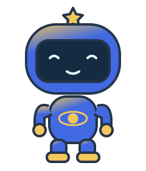
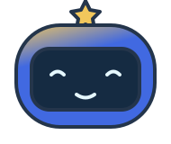
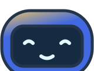
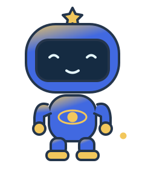
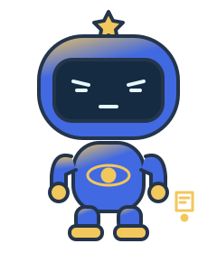
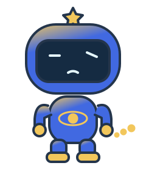
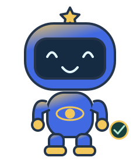
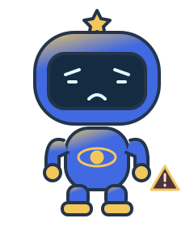
UI icon: 24px 32px
Software Engineering Lead · Claude Code
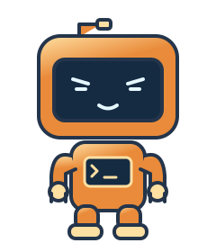
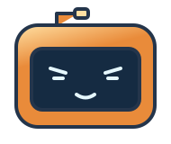
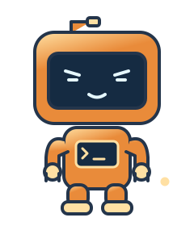
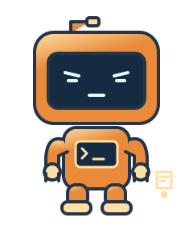
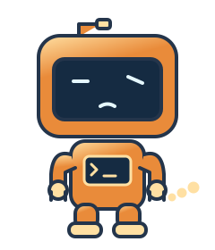
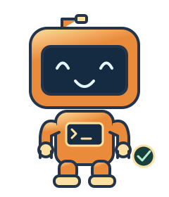
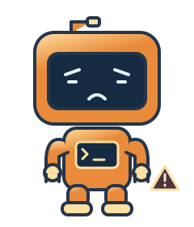
UI icon: 24px 32px
UI/UX Design Lead · Antigravity
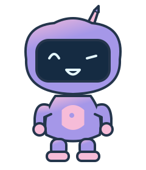
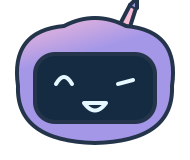
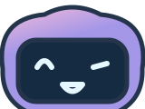
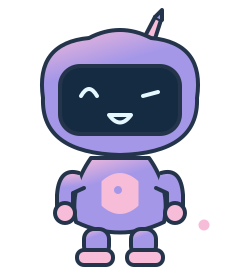
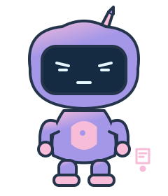
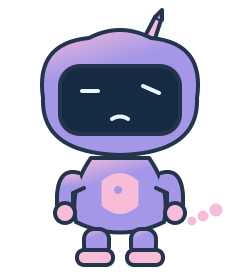
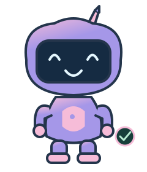
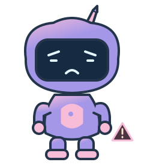
UI icon: 24px 32px
System Architect & Researcher · OpenAI Codex
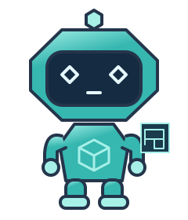
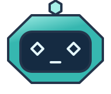
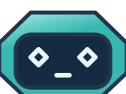
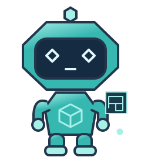
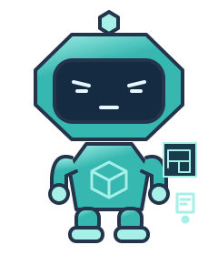
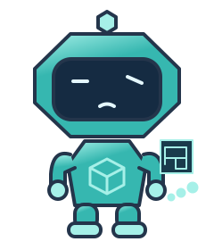
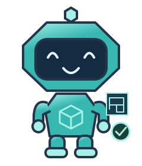
UI icon: 24px 32px
Reviewer, QA & UAT Lead · OpenAI Codex
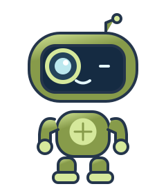
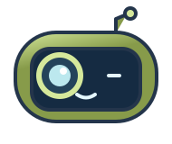
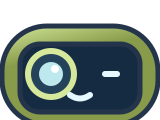
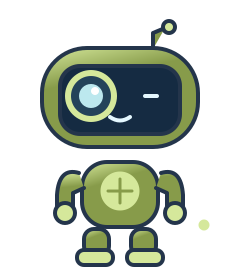
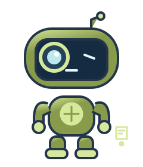
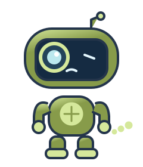
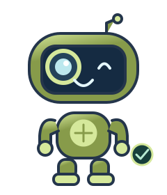
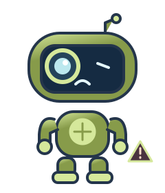
UI icon: 24px 32px